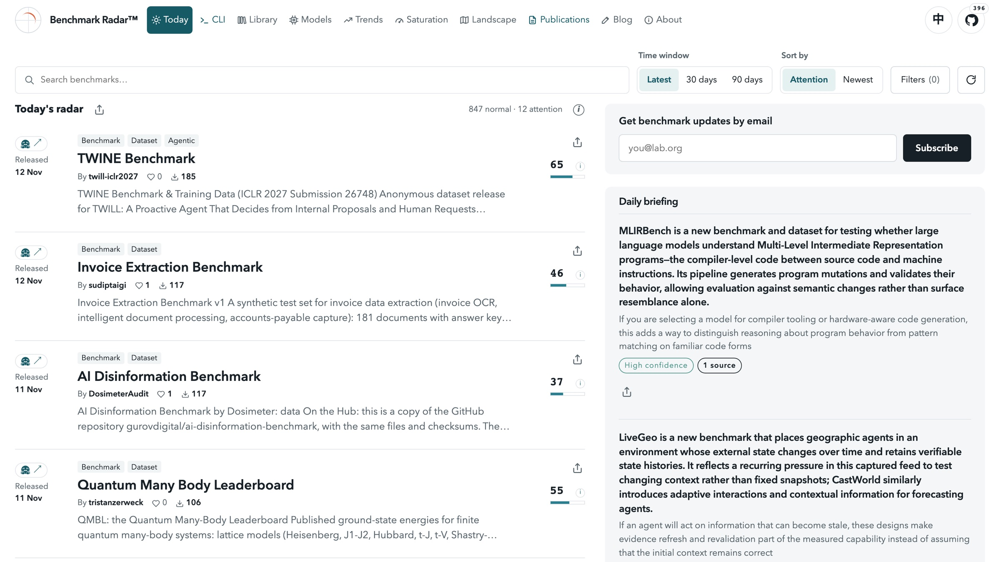
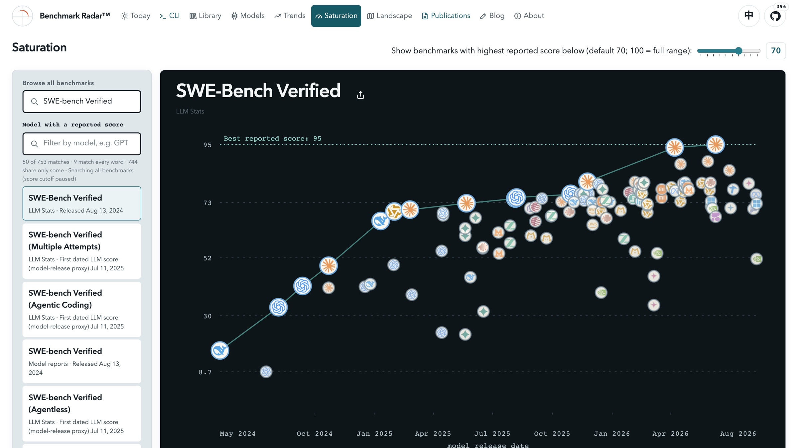
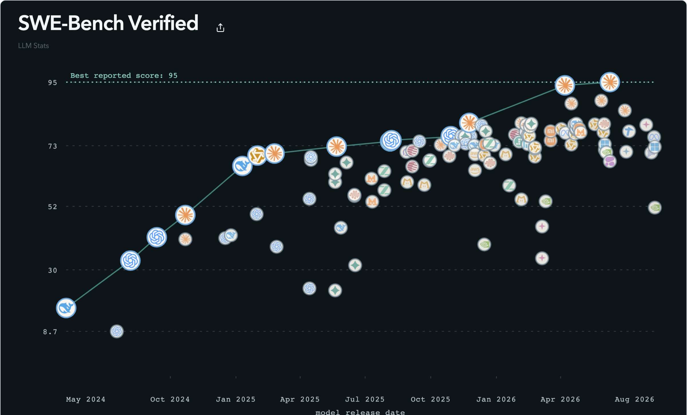

Cohere Labs Open Science Community
Benchmark Radar
Keeping a Living Map of AI Evaluation
Koutian Wu · M.A. candidate in AI for Sciences, UT Austin
Koutian Wu, Wenjun Zhang, Junjie Zhou, Pengqian Han, Qiming Bao, Ergan Shang, Jiayu Wang, Junkai Wang, Wanghan Xu, Songyuanyi Lu, Yixuan Li, Rudy Mizrahi Celekli, Lazizbek Ravshanov, Yaoliang Bian, Xudong Han, Lin Shi
benchmark-radar.org · ktwu@utexas.edu
Why this talk
The problem
- 2,940 new benchmark releases in 90 days. No single place tracked what exists, who reported it, or how scores moved.
- Teams pick evals by habit. The familiar names win, not the ones that fit the product.
- Headline scores travel alone. The source, the reporter, and the date get dropped along the way.
- A wrong eval costs more than no eval. It gives a team confidence in the wrong direction.
2,940 = releases in Benchmark Radar's 90-day window, retrieved Nov 13, 2026 (scripts/release_repo_findings.py).
benchmark-radar.org
The project
What Benchmark Radar is
49,679
benchmark records collected
41
public sources, crawled daily
396
GitHub stars
300+
users
- Every record keeps its original source and its score history.
- Open: code on GitHub (pipeline MIT, web UI AGPL-3.0), dataset on Hugging Face (MIT; third-party data keeps its own terms).
Records: benchmark-radar.org records badge, Nov 13, 2026. Stars: GitHub, Nov 13, 2026.
benchmark-radar.org
Reach
Who is viewing and using it
- Researchers at OpenAI, Anthropic, Google, Meta, Microsoft, NVIDIA, Amazon, IBM, ByteDance, and Unitree viewed/using it.
- 300+ users across labs, companies, and universities.
benchmark-radar.org
The pipeline
How it works
- DiscoverNew benchmarks are found as they appear in papers, repos, datasets, and leaderboards.
- ExtractEach record keeps its original source, the reported score, who reported it, and the date.
- TrackScore history is followed over time, so new results and new versions stay visible.

The live site: search at the top, today's new benchmarks ranked below, each linked to its source.
benchmark-radar.org
Live demo
Demo: SWE-bench Verified
- Search it. Every source, every year, no score cutoff: 9 records match the full name.
- Open the record. One record per source: LLM Stats, model reports, and variants.
- Read each point. Model, organization, date, and whether the score was self-reported.
- Watch the history. How the best reported score moved as new models arrived.

benchmark-radar.org/saturation
Finding 1 of 5
Attention
Repos with zero GitHub stars70%
Stars held by the top 1% of repos78%
Stars held by the top 10% of repos98%
1,024 GitHub repos behind 2,940 new benchmark releases from the last 90 days. Attention is a power law: a handful of benchmarks get almost all of it.
Stars measure attention, not quality. The benchmark your product needs may be in the 70%.
Benchmark Radar insights #1130, #1132; re-run Nov 13, 2026 on the 90-day window.
benchmark-radar.org
Finding 2 of 5
Papers
8.5★ vs 0★
median stars, repos with an arXiv paper vs without
21 of 29
repos with 100+ stars have a paper
14%
of repos in the cohort have a paper
- This is an association, not a cause. A paper and stars can both come from a well-resourced team.
- For your team: a paper-less benchmark is not wrong, but its setup is harder to check.
Benchmark Radar insight #1131; re-run Nov 13, 2026 (146 paper repos, 878 without).
benchmark-radar.org
Finding 3 of 5
Abandoned repos
35%
never pushed again after the day they were created (363 of 1,024)
5.3%
of repos are gone or made private: GitHub returns 404 (57 of 1,081)
- A finished benchmark can be pushed once. One-day repos measure activity, not quality.
- A missing repo is a dead citation. Radar now lists gone and archived repos without ranking them.
Benchmark Radar insights #1130, #1133. Gone = 404 on the GitHub repository endpoint, which follows renames.
benchmark-radar.org
Finding 4 of 5
Saturation
16.8 → 95.0
best reported SWE-bench Verified score, May 2024 → June 2026
65 of 111
reported scores are 70 or higher
Saturated is not solved. A crowded top means the test separates fewer models, not that the task is done.

SWE-Bench Verified, LLM Stats leaderboard, Benchmark Radar Saturation page, Nov 13, 2026.
benchmark-radar.org/saturation
Finding 5 of 5
Audits
SWE-bench Pro
109 of 728
public tasks underdetermined (15.0% floor); 3 gold patches fail the benchmark's own verifier.
Published June 21, 2026: 17 days before OpenAI's audit (July 8) estimated ~30% of tasks broken.
Terminal-Bench 2.1
40 of 83
gold-passing tasks still pass after a careless in-workspace deletion.
DeepSWE
4 of 113
reference solutions fail their own verifiers (v1.0). The v1.1 re-grade fixed 3 of them.
- Radar lists 9 audits of 8 benchmarks, all by June Kim: also ProgramBench, MirrorCode, FrontierCode, SlopCodeBench, and Frontier-Bench.
Findings as reported by each audit, linked from the benchmark's Radar record (june.kim, GitHub, Zenodo).
benchmark-radar.org
Take home
A five-step check
01 · Finding 1
Discover wide
Start from the full landscape, not from what is trending.
02 · Findings 2–3
Check provenance
Find the paper, the repo, and who reported each score. Confirm the repo still exists.
03 · Finding 4
Check saturation
Ask whether it still separates your candidate models.
04 · Finding 5
Check audits
Look for an independent recheck before you rely on it.
05
Schedule retirement
Decide in advance when the eval gets dropped, and write the date down.
benchmark-radar.org
Roadmap
What is next
- Wider coverage. More sources, more benchmarks, and faster pickup of new releases.
- A deeper audit layer. More audit records linked to the scores they examine.
- Interop with community efforts. Radar's records should flow into shared efforts such as Every Eval Ever, not sit in a silo.
- Better history views. Score movement over time, readable at a glance.
benchmark-radar.org
Join in
Get involved
- Use the dataset. The full record set is open: huggingface.co/datasets/ktwu01/benchmark-radar
- Contribute a benchmark. If Radar missed one you care about, adding it is a small pull request.
- Report an error. A wrong score or a missing source is worth a flag.
- Publish an audit. Radar links it next to the scores it examines.
- Start at benchmark-radar.org. Code and issues: github.com/ktwu01/benchmark-radar
Koutian Wu, M.A. candidate in AI for Sciences, UT Austin · benchmark-radar.org
Q&A
Questions
Which eval does your team trust most, and when did you last check it?
I am looking for my next role in AI evaluation, starting Feb '27. If your team is hiring, or you can refer me, please email me: ktwu@utexas.edu
Thanks to my co-authors and contributors: Wenjun Zhang, Junjie Zhou, Pengqian Han, Qiming Bao, Ergan Shang, Jiayu Wang, Junkai Wang, Wanghan Xu, Songyuanyi Lu, Yixuan Li, Rudy Mizrahi Celekli, Lazizbek Ravshanov, Yaoliang Bian, Xudong Han, and Lin Shi.
Thanks to Prahitha Movva and Cohere Labs for hosting this talk.
Koutian Wu, UT Austin · benchmark-radar.org · ktwu@utexas.edu